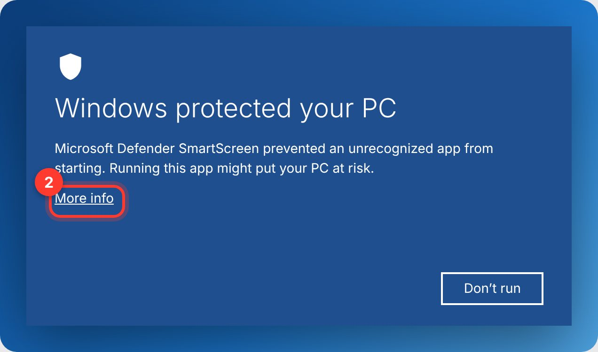
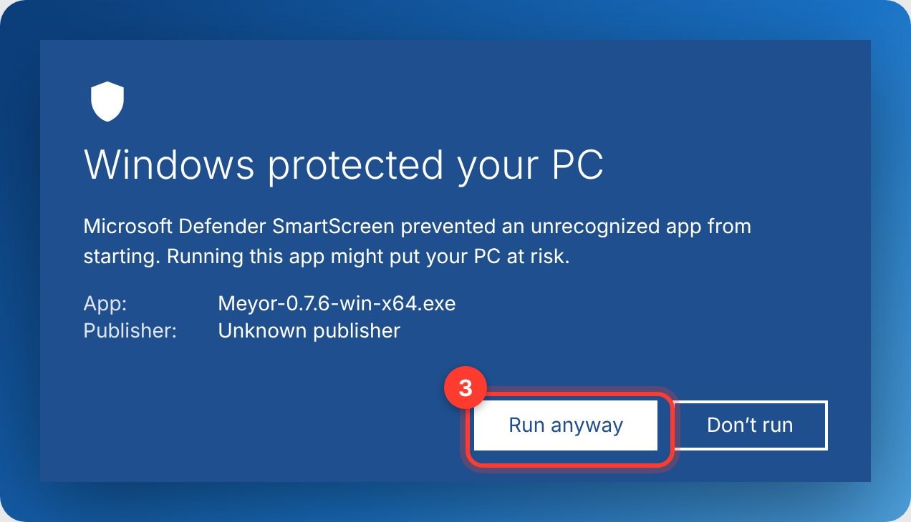
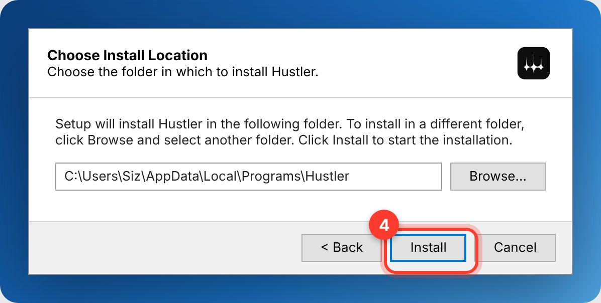
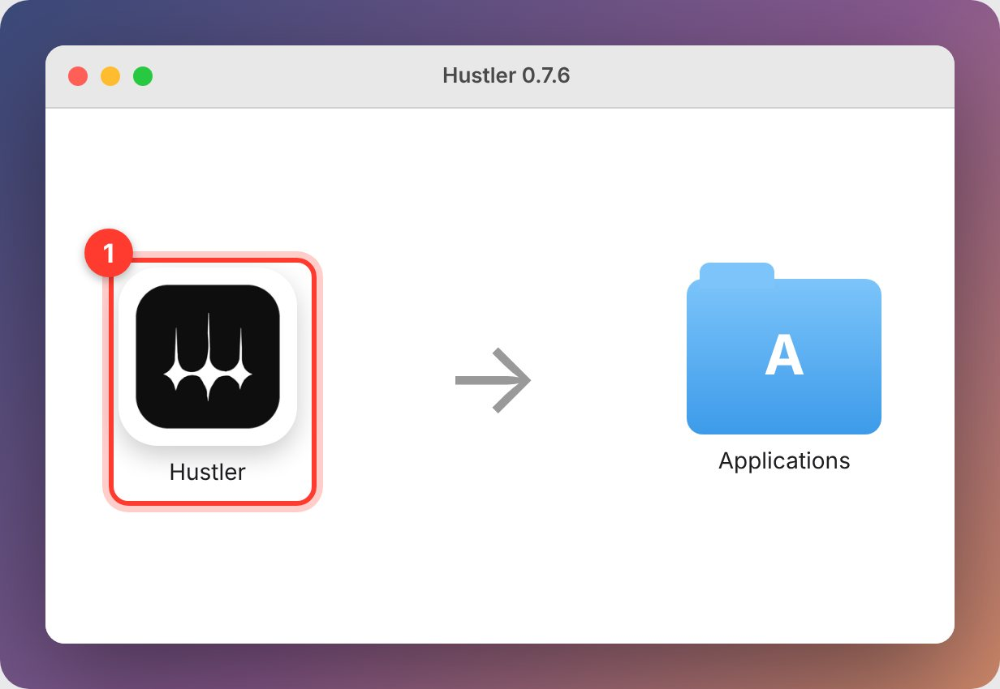
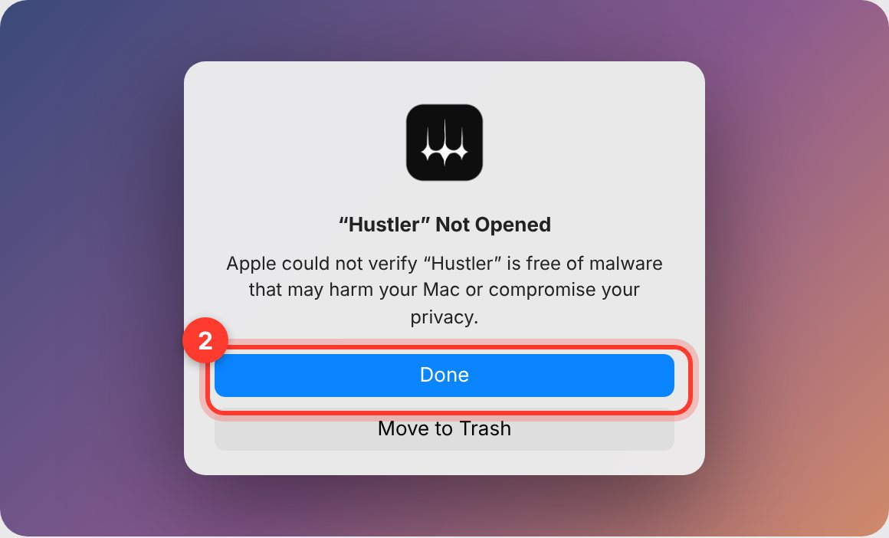
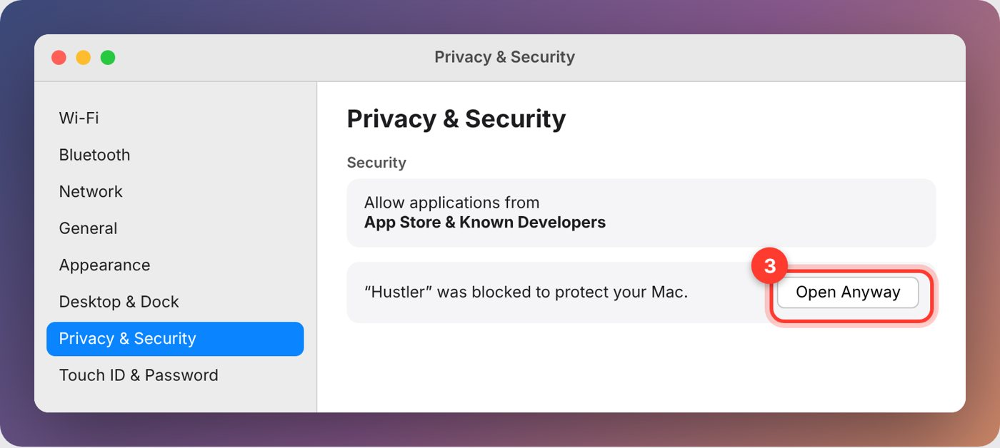
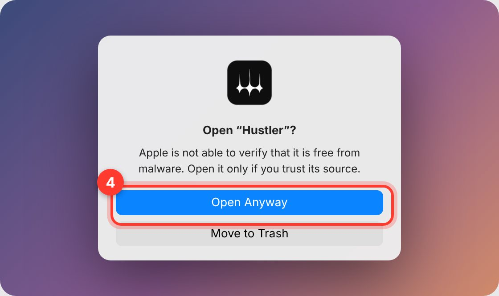
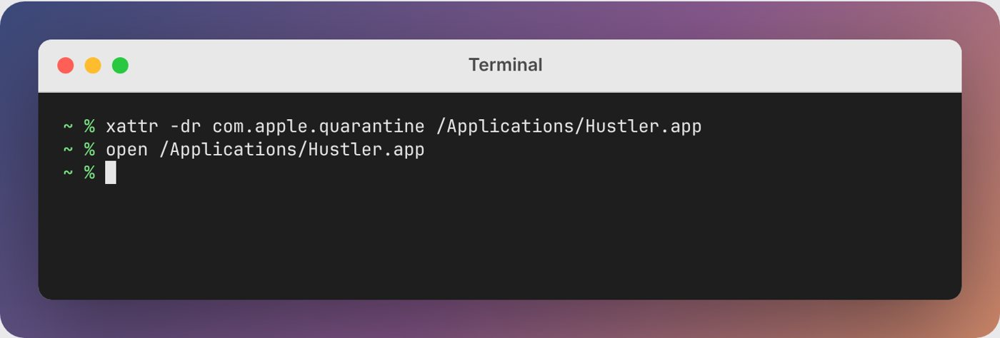
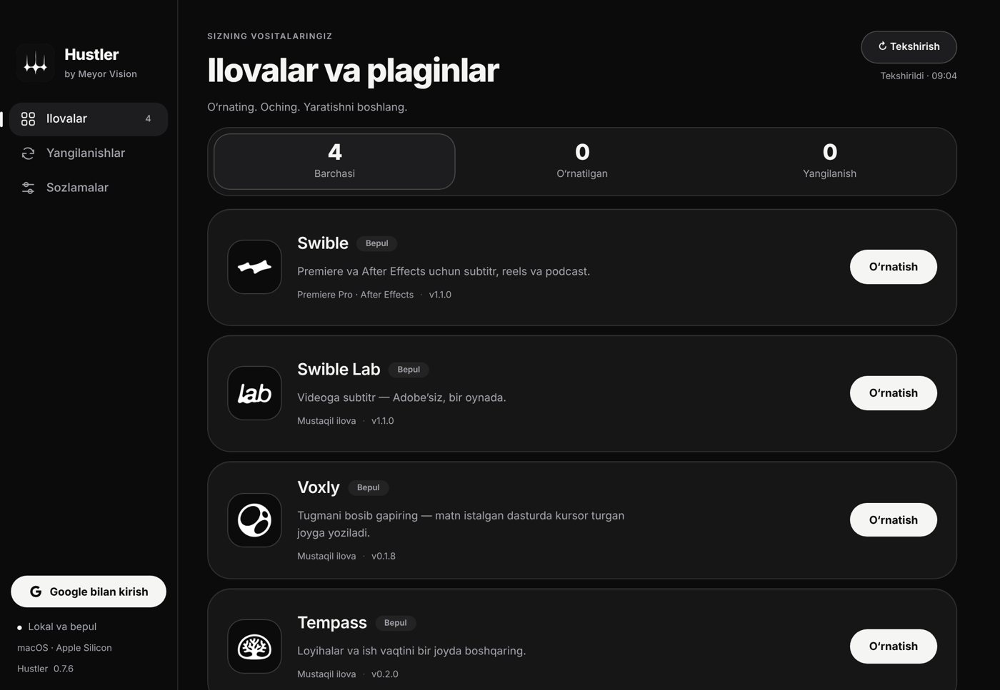
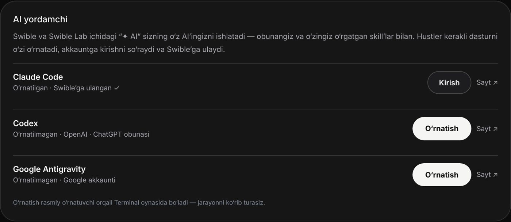

Hustler’ni o‘rnatish
Windows va macOS · 5 daqiqa · bepul
Windows
- Yuklab oling va oching.
Yuqoridagi “Windows” tugmasini bosing. Yuklangan
Meyor-…-win-x64.exefaylini ikki marta bosing. - “More info” (Batafsil) ni bosing.
Moviy “Windows protected your PC” oynasi chiqsa, matn ostidagi More info havolasini bosing.

- “Run anyway” (Baribir ishga tushirish) ni bosing.
Pastda yangi tugma paydo bo‘ladi.

- “Install” ni bosing.
Papkani o‘zgartirish shart emas. Administrator paroli so‘ralmaydi. Tugagach Hustler o‘zi ochiladi.

macOS
Mac’ingiz qaysi ekanini bilmasangiz: chap yuqoridagi Apple menyusi → About This Mac. “Chip: Apple M…” bo‘lsa — Apple Silicon, “Processor: Intel” bo‘lsa — Intel.
- DMG’ni oching va Hustler’ni Applications’ga torting.
Yuklangan
Meyor-…-mac-….dmgfaylini oching. Chiqqan oynada Hustler belgisini Applications papkasiga sudrab tashlang.
- Hustler’ni oching — ogohlantirishda “Done” ni bosing.
Launchpad yoki Applications’dan Hustler’ni oching. “Apple could not verify…” oynasi chiqadi: Done ni bosing (Move to Trash ni emas).

- System Settings → Privacy & Security → “Open Anyway”.
Apple menyusi → System Settings → Privacy & Security. Pastga, Security bo‘limigacha tushing: “Hustler was blocked…” yonidagi Open Anyway ni bosing.

- Yana “Open Anyway” va Mac parolingiz.
Tasdiqlash oynasida Open Anyway ni bosing, so‘ng Mac parolingizni yoki Touch ID’ni kiriting. Bu bir marta qilinadi.

Terminal orqali (tezroq yo‘l): Terminal’ni oching va quyidagini yozing — Hustler darrov ochiladi:
xattr -dr com.apple.quarantine /Applications/Hustler.app open /Applications/Hustler.app

Birinchi ishga tushirish
- Kerakli ilovani o‘rnating.
Ilovalar bo‘limida Swible (Premiere / After Effects plagini), Swible Lab, Voxly yoki Tempass yonidagi O‘rnatish ni bosing. Hustler hammasini o‘zi yuklaydi va sozlaydi.

- AI’ni ulang (ixtiyoriy).
Sozlamalar → AI yordamchi: Claude Code, Codex yoki Google Antigravity yonidagi O‘rnatish → Terminal ochiladi, dastur o‘rnatiladi va akkauntingizga kirishni so‘raydi. Keyin Swible ichidagi “✦ AI” va Avto montaj sizning AI’ingiz bilan ishlaydi.

- Yangilanishlar o‘zi keladi.
Hustler ilovalarni va o‘zini yangilab turadi: yangi versiya chiqsa, o‘zi o‘rnatib qayta ochiladi — installer oynasi chiqmaydi.